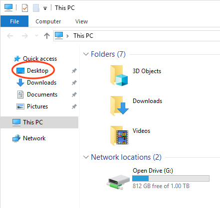

Get Around Your Computer
<div class="github-fork-ribbon-wrapper left"> <div class="github-fork-ribbon"> <a href="https://github.com/digixc/8-CS-ProblemSolving">Fork me on GitHub</a> </div> </div> <div id="stickyribbon"> <ul> <li><a href="1Lesson.html">Login</a></li> <li><a href="2Lesson.html">Homedrive</a></li> <li><a href="3Lesson.html">Get Around</a></li> <li><a href="4Lesson.html">Filetypes</a></li> <li><a href="6Lesson.html">Upload Work For Marking</a></li> <li><a href="5Lesson.html">Email</a></li> </ul> </div>
1 Progress Check
Key Points Check 1 - tick if you have finished the item in the list
- Lets do some exercises on find your way around your computer at school.
- Tick each task when you have successfully done it in the following list.
<div class='checkItem'> <input type='checkbox'> You can open a <em>File epxlorer</em><br> <input type='checkbox' > You have created at least two folders in your home drive- <em>"Computer Science"</em> and <em>"Design Engineering"</em><br> <input type='checkbox' > You have created another folder inside the <em>"Computer Science"</em> called "Year 7"<br> </div>
2 Split the computer screen to make your life easier
- For the activities follow, you will open at least two programs at the same time: the browser where you can read this instruction and the File explorer window to accee your home drive.
- It would be very nice if you can have this bowser window and the File explorer window side by side so they don't overlap.
- To do this, you just drag one of the windows to one side of the screen and the click on the other window as shown in the following animation:

3 Launch app(lication), software or program
- App, program and software are the same thing. For example, the browser you are using now is a software, or app or a program. App is short for application.
- At BGS, we are going to use many different programs, especially in "Computer Science" and "Design Engineering".
Try it - open a software or app or program from desktop
- Most of those software can be found at your desktop. You can access your desktop:
- Using your keyboard: press Windows + D to quickly access your desktop.
- In File explorer, click on the Desktop in the left panel. 
- Lets try the following tasks:
<p><b> Tick each task when you have successfully done it in the following list.</b></p> <div class='checkItem'> <input type='checkbox'> You can access your <em>Desktop</em><br> <input type='checkbox' > After going to Desktop, you have successfully openned Microsoft Word by double clicking on it<br> <input type='checkbox' > You have successfully closed Microsoft Word<br> <input type='checkbox' > You have successfully openned your Desktop from a File explorer window<br> </div>
Try it - Save your work
- It is very important to save your work, so you can change it later and upload for your teachers to mark
- Lets try the following tasks:
<p><b> Tick each task when you have successfully done it in the following list.</b></p> <div class='checkItem'>
<input type='checkbox' > Open Microsoft Word<br> <input type='checkbox' > Click on<em> "Blank Document" </em> or click on <em>"File"</em> then <em>"New"</em> to open up a blank word document<br> <input type='checkbox' > Type anything a list of subjects<br> <input type='checkbox'> Click <em>"File", "Save As"</em> then <em>"Browse"</em> to navigate to your folder "Computer Science" to save your work. Give your file a meaningful name by replacing the "Doc1" with "list of subjects". Leave the ".docx" alone<br> <input type='checkbox' > Close Microsoft Word<br> </div>
Try it - Open your saved work for editing
- Lets try the following tasks:
<p><b> Tick each task when you have successfully done it in the following list.</b></p> <div class='checkItem'> <input type='checkbox'> Navigate to your folder "Computer Science". <br> <input type='checkbox' > Find the file you have saved from above exercise and double clickon it to open it in Microsoft Word<br> <input type='checkbox' >change something to the list of subjects<br> <input type='checkbox' > Click <em>"File", "Save" to save the updated file</em> <br> <input type='checkbox' > Close Microsoft Word<br> </div>
Try it - Open two "File explorers" windows to move or copy file across
- After you have open one *File explorer" window using one of the methods shown in the previous lesson, repeat the step and open the second *File explorer" window and drag them so they will be side by side.
- On one of the window, go to your "Computer Science" folder, on the second window, go to your "Design Engineering" folder.
<p><b> Tick each task when you have successfully done it in the following list.</b></p>
<div class='checkItem'> <p>Move a file</p> <input type='checkbox'> - From the "Computer Science" folder, find the file "subject list" and drag it to the "Design Engineering" folder on the second File explorer window. <br> <p>Copy a file - method 1</p> <input type='checkbox' >- From the "Design Engineering" folder, find the file "subject list" and right click, then select "Copy" to copy it. Go to the "Computer Science" folder on the first File explorer window, right click any blank space inside the window, then select "Paste". <br> <p>Copy a file - method 2</p> <input type='checkbox' >- From the "Design Engineering" folder, find the file "subject list" and click it, then press CTRL+C to copy it. Go to the "Computer Science" folder on the first File explorer window, then press CTRL+V to paste it. <br> </div>
Badge it
- Take a screenshot of your folder with the saved file with the list of subjects you have created early.
- Save your screenshot inside the folder "Intro to PC"
- Upload the screenshot to https://www.bournetolearn.com at the correct place